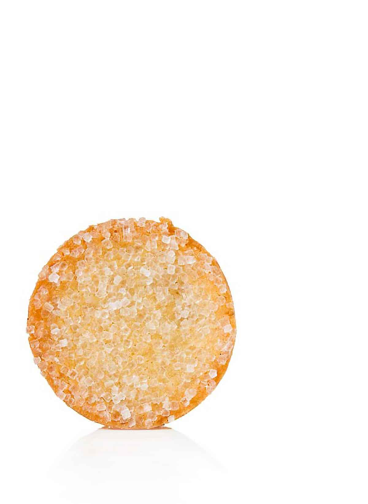

Sable Cookies

Description
French sable cookies.
Ingredients
- 2 stick sbutter
- 1/2 cup sugar
- 1/2 tsp fine sea salt
- 2 large egg yolks
- 2 tsp vanilla extract
- 2 cups all-purpose flour
Steps
- With a mixer on low speed, beat the butter, sugars, and salt together for 5 minutes, until smooth. Beat in the yolks, then the vanilla. Scrape the bowl and add the flour all at once. Mix only until the flour is incorporated.
- Divide the dough in half, flatten into disks on a lightly floured surface, and place each between sheets of parchment or wax paper. Roll the dough 1/4 inch thick. [Editor’s Note: Just like in the story of Goldilocks, you want the dough to be not too thin and not too thick but just right at 1/4 inch thick. Trust us.] Refrigerate for at least 2 hours or freeze for at least 1 hour.
- Sprinkle the cookies with sanding sugar and bake for 18 to 22 minutes, until the cookies are golden brown on their bottoms and around their edges. Cool for 15 minutes on the baking sheet or in the muffin tin, then transfer to a wire rack to cool completely.